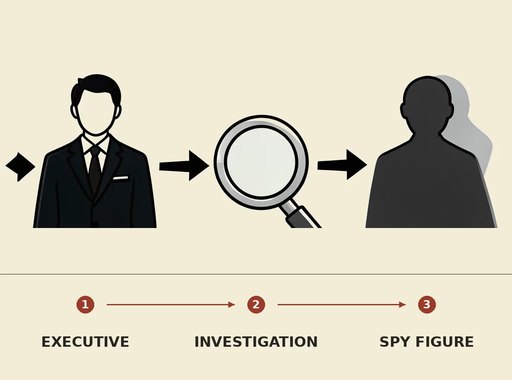

Nvidia has launched an internal investigation into its CEO Jensen Huang's relationship with an alleged Chinese spy, as reported by The New York Times. Only the headline-level development is currently known, with no further details provided regarding the specific nature or extent of the alleged connection. This inquiry could carry significant implications for Nvidia's leadership, corporate governance, and its standing in the global technology market, particularly concerning national security, intellectual property, and international relations.